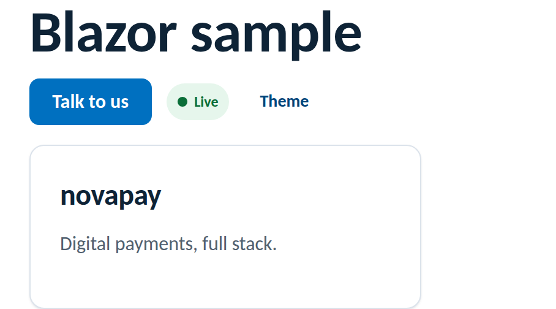

Frameworks
The kit is plain CSS + static assets, so Blazor (Server and WebAssembly) consumes it
with no wrapper library: serve the package from wwwroot, link one
stylesheet, and use the component classes in your Razor markup.
The MSBuild target below copies from node_modules/novus-design-kit.
That folder is created by running npm install novus-design-kit in your
project folder (the tokenless public npm package): add a minimal
package.json next to your .csproj if you don't have one.
No Node at all? Two alternatives: download the exact release tarball from the
GitHub releases
(the .tgz attached to each version) and extract it to a folder of your choice, or
clone the repository and copy the kit files; then point the target's
Include path at that folder instead of node_modules. npm is the
recommended route because npm update then handles upgrades.
# in the Blazor project folder (next to the .csproj)
npm install novus-design-kitThen copy the package into wwwroot/lib at build time with an MSBuild
target in your .csproj (note BeforeTargets="PrepareForBuild":
copying into wwwroot later than that breaks asset fingerprinting on clean builds):
<Target Name="CopyNovusKit" BeforeTargets="PrepareForBuild">
<ItemGroup>
<NovusKit Include="node_modules/novus-design-kit/**/*" />
</ItemGroup>
<Copy SourceFiles="@(NovusKit)"
DestinationFiles="@(NovusKit->'wwwroot/lib/novus-design-kit/%(RecursiveDir)%(Filename)%(Extension)')"
SkipUnchangedFiles="true" />
</Target>In Components/App.razor (.NET 8+) or wwwroot/index.html
(WebAssembly), inside <head>:
<link rel="stylesheet" href="lib/novus-design-kit/tokens.css" />
<script src="lib/novus-design-kit/js/novus-theme.js"></script><button class="btn btn--primary" @onclick="Submit">Talk to us</button>
<div class="card card--interactive" style="position:relative">
<h3>@Title</h3>
<p class="muted">@Summary</p>
<button class="card-trigger" aria-label="Open" @onclick="Open"></button>
</div>@inject IJSRuntime JS
<button class="btn btn--ghost btn--sm" @onclick="Toggle">Theme</button>
@code {
private async Task Toggle() =>
await JS.InvokeVoidAsync("novusTheme.toggle");
}Rendered from this guide's own sample project, executed and verified on 2026-08-26 against the .NET SDK 10.0 Blazor Web App template.

.btn collides with the kit's. Remove those two stylesheet links from App.razor: the kit replaces them.::deep to reach them.var(--…) tokens there too.<head> so the persisted choice applies before first render.